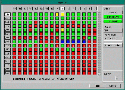

VIEW I/O
|
This menu displays
all the Inputs and Outputs and their current status in real time. Devices can
be forced on or off from this screen. Also, I/O can be inverted from this menu. Select this menu from the main screen menu or press F3 (this can be done from anywhere in FortnaPlus©). The menu will display each I/O bit and its current status. To navigate, use the arrow keys and Page Up and Page Down. Clicking with the mouse will also take you to the desired bit. |
Click Here to see a full screen shot of the IO Screen  |
The upper right hand side of the screen, labeled State, will display the information about the bit that is selected. If the bit has been forced on manually, the Forced On button will display in green and the bit in yellow. If the bit has been forced off, the Forced Off button will display in green and the bit in yellow. If the bit has been inverted, the bit will display in blue and the Inverted button will display in green.
These buttons can be used to manually force the bit on or off, given the appropriate security level. Caution is advised as outputs forced on will start. Note: The force will stay on until it is removed. If a bit is forced and FortnaPlus© is saved, it saves the force also. The bit that is forced will no longer react to any I/O that would normally affect it.
Bits may also be inverted. For example: if a photoeye is wired normally-open but the software is configured for normally-closed, the bit can be inverted and it will act like a normally-closed device. To invert a bit, use the plus (+) and minus (-) keys. The plus key will invert the bit and the minus key will clear the invert.
The box in the middle on the right, titled GOTO awaits a name to locate a specific device. While in the View I/O screen, any characters that are typed on the keyboard will appear here.
Any device can be located easily by typing its name and pressing Enter. The name must be typed exactly as it appears in the Parts Database Menu, and it is case sensitive. After pressing Enter, the cursor will be moved to the bit you are looking for. The cursor will not move if no match is found. If a bit shows as being disabled it means that something else in the program has turned that bit off. Until that condition is corrected, the bit will not be allowed to turn on or off. For example, if a section of accumulation becomes full, the Full Menu may disable the motor upstream from the accumulation conveyor. That motor output bit will show as being disabled. Once the accumulation conveyor is cleared, the disable will be cleared and the motor will start up again.
Copyright © 2001 Fortna Inc. All rights reserved.